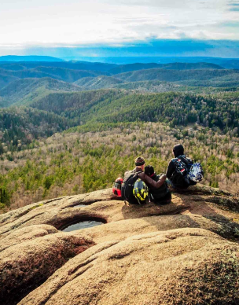

Cамые актуальные новости туризма в России
Куда поехать летом?
Путешествовать всегда здорово, а в теплое время года приятнее вдвойне. Захотел — поехал на море.
Решил подняться в горы — только выбери свой трекинговый маршрут. Едете с детьми — тут вам и дельфинарии,
и аквапарки под открытым небом, и сумасшедшие аттракционы в парках. Так куда же поехать?
Сердце Сибири, путешествие, которое вы никогда не забудете!
Красноярский край — настоящее раздолье для туриста. Здесь добывают золото и приглашают в музей вечной мерзлоты.
Местные фермеры выращивают помидоры весом больше 2 кг, а в ресторанах угощают олениной и кашей из кедровых орехов.
Вы увидите горы, водопады, нетронутую природу Крайнего Севера, сможете подняться по самой длинной лестнице в стране.

Шашлычок под CSS вкусно очень! Самые вкусные рецепты маринада шашлыка к майским праздникам.
Наконец-то май, как же хочется на природу. Давайте рассмторим самые популярные рецепты шашлыка
к майским праздникам, Поверьте, это будет вкусно! Заодно выберем какие шампура лучше использовать для мангала.
Как же одеться в поход?
Что же одеть и что не забыть перед походом? давайте разбираться...
Осторожно, в лесах Ленинградской области видели снежного человека
Недалеко от КАД рядом с поселком Пеники местные жители утверждают, что видели снежного человека